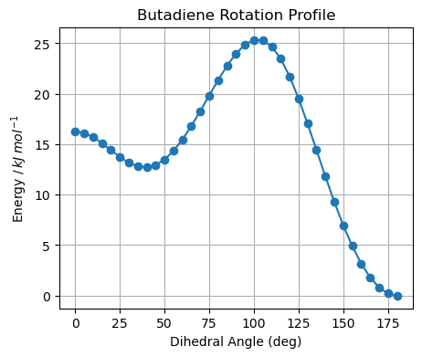

Conjugation: Bond Rotation in Butadiene#
To understand the effect of conjugation it is useful to explore the conformational energy profile for rotating the central C-C bond in butane and butadiene. this notebook will present the profile for butane.
We can calculate the energy for different conformations of butane using programs that perform quantum mechanical calculations. I have no idea what is happening under the hood, but this python notebook will document my methods and then others can correct my errors easily while judging me harshly. I will be using the Psi4 computational chemistry package. It is freely available as a Python module and so it is very convenient to use in a notebook like this one.
Setting Up#
Note
This notebook contains the instructions and code to optimize the structure and calculate the energy for a set of butane molecules with fixed torsional angles at the central C-C bond. the data is saved in csv and binary files for use in the next notebook that will use the data for extracting useful information. I am doing this so that the two operations: data creation and data analuysis are separated. The calculation here took ten minutes on my computer. So you can start with the data rather than repeating the expensive calculation if you wish
First I am going to set up the calculation by setting the variables in the code block below. You will see that I choose the name of the job (basename: this will be used to name the log and result files) and an extra name to add to that name as I try multiple runs (runname). I also set up information for what angles to set for the bond rotation(start_angle, end_angle, and step_size). the most important data is the structural data. I must describe the positions of atoms for the calculation. I set a text block in a variable called butane_template to hold the structural info. The format does not matter, just know that the data describes the initial structure. the {phi} placeholder will be replaced with the chosen bond angle in the calculations that follow.
If your interested, the structural data is presented as a z-matrix. this is a format that describes the positions of atoms relative to each other. the firest line states the charge and electronic state as 0 charge and a singlet electronic state (singlet means all electrons are paired). the following lines describe the atoms. the Z-matric copuld be describes as follows…
Atom #1 is carbon;
Atom #2 is carbon and it is 1.34 Angstroms from atom #1.
Atom #3 is carbon and it is 1.46 Angstroms from atom #2 and at an angle of 122 degrees from the 1,2 bond
Atom #4 is carbon and it is 1.34 Angstroms from atom #3 and at an angle of 122 degrees from the 2,3 bond and at a torsional angle of {phi} from the plane defined by atoms 1,2 and 3.
Atom #5 is hydrogen and it is 1.09 Angstroms from atom #1 and at an angle of 121 degrees from the 1,2 bond and at a torsional angle of 181 degrees from the plane defined by atoms 1,2 and 3.
etc.
We now have everything set up. We will need only to change this setup infromation when we switch to butadiene in the next notebook.
Running Psi4#
The code below will run the job. It will use the structure data in template and substitute the {psi} with the value for the torsion angle. The code establishes the settings for the calculation, inputs the molecular geometry and then runs a structural optimization job to find the lowest energy structure for the given tortional angle. the torsion angle for the central C-C bond is locked but all other bond distances, bond angles and torsion angles can change until the lowest energy structure is found.
Note
This job will take more about 5 minutes to run. There is data from a previous run available. it is much faster than in the case of butane because it has fewer atoms (10 instead of 14). the Hartree-Fock method used in the calculations scales at \(n^6\). this calculation should take about one eigth of the effort, and that is approximately true in this case. The molecule is more rigid and converged easily in the optimization algorthm so I did not have to use any of the optional tricks to help it converge.
Store the Data#
the code below will take the vaiable that contain the following information and store it so that we can retrieve the data later from files rather than repeat a lengthy calculation.
The angle, relative energy (kJ/mole) and calculated HF energy (Hartrees) will be strored in a csv file.
The list of optimized molecular structures will be converted to strings of Z-matrix internal coordinates and xyz cartessian coordinates and these will also be included in the csv file above.
The list of wavefunction data for each structure (Psi4 objects) can be stored as separate files of numpy arrays using the .to_file() method available to Psi4 wavefunction objects.
Plot the Data#
This plot is also made in the data processing notebook that follows this one. It is here as a quick check that the calculation produced sensible results.
